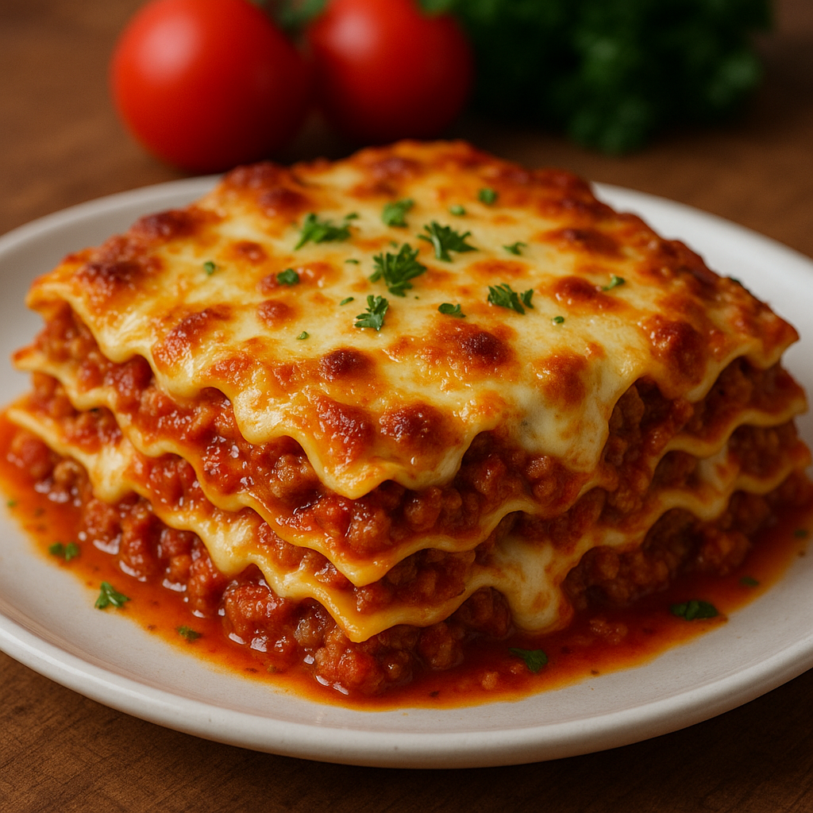

Lasagna

Description
This delightful Lasagna begins with a rich,
savory meat sauce made by slowly cooking ground meat with finely chopped vegetables
like onion, carrot, and celery.
Garlic and herbs add depth, while tomatoes simmer into the mixture to create a thick, flavorful ragù.
Alongside this, a creamy white sauce is prepared by whisking warm milk into a buttery roux until smooth and thick,
often finished with a hint of nutmeg for warmth.
To assemble, the sauces are layered between sheets of pasta in a baking dish, with generous handfuls of cheese scattered throughout.
The layers are repeated until the dish is full, then topped with more white sauce and cheese.
It’s baked until bubbling and golden, then allowed to rest so the layers set. The result is a comforting,
hearty dish with a perfect balance of savory meat, creamy sauce, tender pasta, and melted cheese.
Ingredients
- Lasagna noodles
- Ground beef (or beef/pork mix)
- Onion, carrot, and celery (finely chopped)
- Onion, carrot, and celery (finely chopped)
- Garlic
- tomatoes and tomato paste
- Dried herbs (oregano, basil)
- Olive oil
- Butter and flour (for béchamel)
- Milk (whole preferred)
- Nutmeg (optional)
- Mozzarella cheese (shredded)
- Parmesan cheese (grated)
- Salt and pepper
Steps
- Preoare the meat sauce: Sauté onion, carrot, celery, and garlic. Add ground beef, cook until browned.
Stir in tomatoes, herbs, salt, and pepper. Simmer for 30–45 minutes.
- Make the béchamel: Melt butter, stir in flour, then slowly whisk in warm milk. Cook until thick;
season with salt, pepper, and nutmeg.
- Assemble the lasagna: In a baking dish, layer meat sauce, noodles, béchamel, and cheese.
Repeat layers and finish with béchamel and cheese on top.
- Bake: Cover with foil and bake at 375°F (190°C) for 25 minutes.
Uncover and bake 20–25 minutes more until golden.
- Rest and serve: Let rest 15 minutes before slicing. Serve warm.
Home